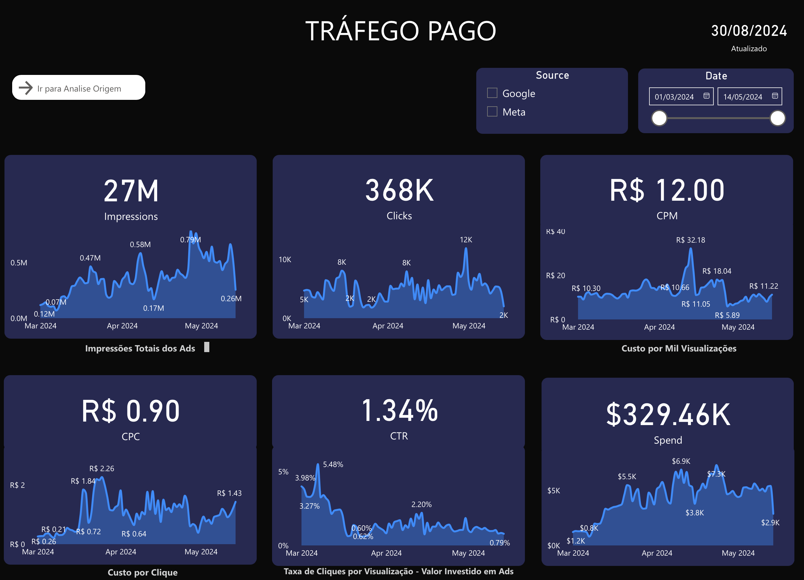
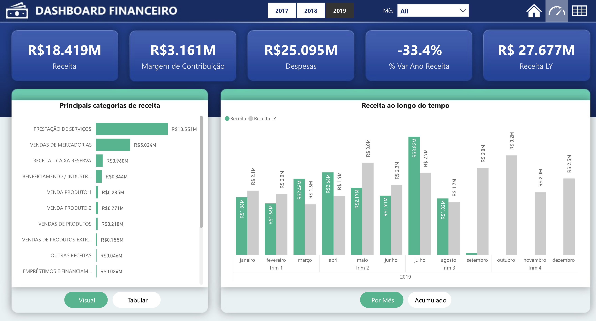
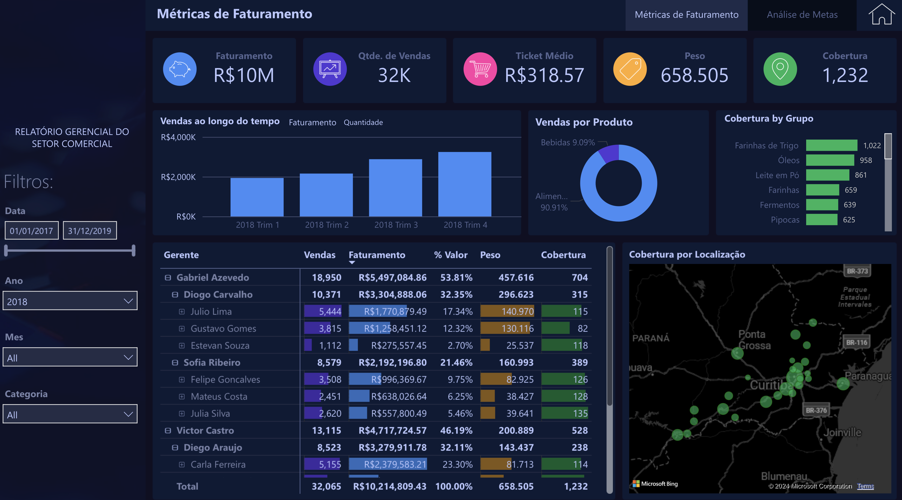
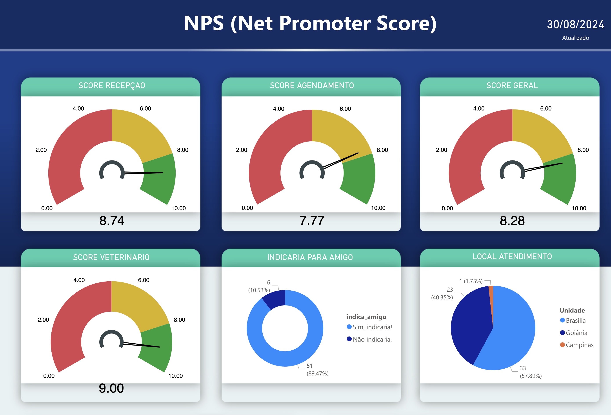
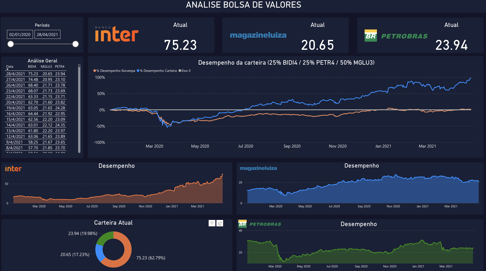

Portfólio

Exemplos de projetos

Análise ADS Redes Sociais
Conexão direta via API Meta e Google. Acompanhamento de impressões, clicks, CPM, CPC, CTR e investimento em tempo real.
Análise RH
Dashboard completo de recursos humanos com indicadores de performance e People Analytics.

Análise Financeiro
Painel financeiro com visão de receitas, despesas e indicadores de saúde financeira.

Análise Faturamento
Acompanhamento de faturamento com drill-down por período, produto e região.

Análise NPS
Conexão direta via API Bitrix para análise de Net Promoter Score em tempo real.

Análise Bolsa de Valores
Dashboard de acompanhamento de ativos com indicadores técnicos e fundamentalistas.